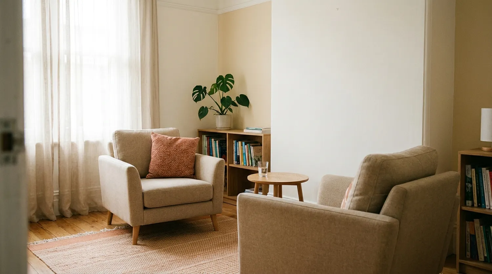
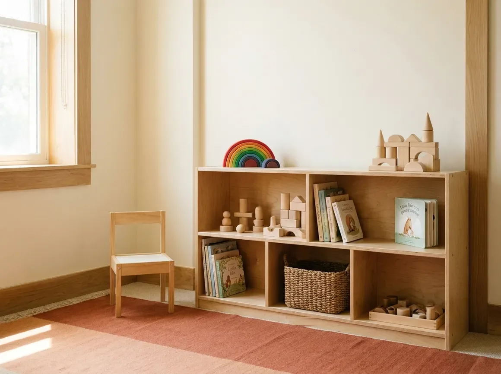

Entender é o
primeiro cuidado.
Psicoterapia, avaliação neuropsicológica e apoio à família. Uma equipe de psicólogos no Itaigara desde 2004, que acompanha crianças, adolescentes e adultos.

Atendimento psicológico e avaliação neuropsicológica para crianças, adolescentes e adultos.
A Aion reúne psicólogos com formações diferentes sob o mesmo teto, em Salvador, desde 2004. Quando a demanda muda ao longo do processo, o acompanhamento continua dentro da mesma equipe, e você não recomeça a contar a sua história a cada porta nova.
Ninguém chega aqui com o problema já explicado.
Se alguma dessas frases soa familiar, a procura já tem um primeiro nome. Cada uma costuma começar por um serviço diferente.
- A escola chamou para conversar e falou em avaliação. Avaliação Neuropsicológica
- O diagnóstico veio, e agora ninguém disse o que fazer com ele. Intervenção Neuropsicológica
- Você convive há anos com algo que pesa e nunca sentou para falar sobre isso. Atendimento Psicológico
- Em casa, nada do que vocês tentam com seu filho está funcionando. Orientação Familiar
- Seu filho adolescente precisa escolher uma profissão e travou. Orientação Profissional
- Você queria conversar com quem passa pela mesma coisa, não com quem opina. Grupo de Apoio Parental
Reconhecer-se em alguma dessas frases não é um diagnóstico. Serve para dar um ponto de partida à conversa inicial, que é onde o caminho realmente se define.
Serviços
O que a clínica atende
Crianças, adolescentes e adultos. Cada caso é encaminhado ao profissional da equipe cuja formação corresponde à demanda.
Atendimento Psicológico
Psicoterapia para crianças, adolescentes e adultos, no ritmo de cada pessoa.
Saiba maisAvaliação Neuropsicológica
Investigação estruturada do neurodesenvolvimento, entre elas TDAH, TEA e dislexia.
Saiba maisIntervenção Neuropsicológica
Treino de atenção, memória e funções executivas depois da avaliação.
Saiba maisOrientação Familiar
Aconselhamento para pais e responsáveis sobre o dia a dia em casa.
Saiba maisOrientação Profissional
Autoconhecimento e escolha de carreira para adolescentes e jovens.
Saiba maisGrupo de Apoio Parental
Escuta em grupo para familiares de jovens atípicos, com mediação.
Saiba maisEquipe
Quem atende
Todos os profissionais são psicólogos registrados no Conselho Regional de Psicologia.
Faltam ainda dois profissionais da equipe (nome, formação, CRP e foto).
Começar é mais simples do que parece
Ninguém precisa chegar com o problema explicado. O primeiro contato serve justamente para isso.
Você escreve
Pelo WhatsApp ou pelo formulário, contando em poucas linhas o que procura. Não é preciso detalhar questões de saúde nessa etapa.
Conversa inicial
A equipe responde para entender a demanda e explicar como o processo funciona, sem compromisso de seguir adiante.
Definição do acompanhamento
O caso é encaminhado ao profissional da equipe cuja formação corresponde à demanda, e a frequência é combinada entre as partes.
Prazo de retorno do primeiro contato e disponibilidade de agenda a confirmar com a clínica.
A clínica
Salas preparadas para atendimento de adultos e para trabalho com crianças, com os instrumentos usados nas avaliações.

Imagens de referência. Substituir pelas fotos reais da clínica.
Perguntas frequentes
Reunimos as quatro que mais aparecem. Ver todas as perguntas.
Como funciona o primeiro contato?
Você escreve para a clínica contando o que procura. A equipe responde com uma conversa inicial para entender a demanda e esclarecer como o processo funciona. Só depois dessa conversa é definido o profissional e o formato do acompanhamento.
A partir de que idade a clínica atende?
A Aion atende crianças, adolescentes e adultos. Confirmar se existe idade mínima para atendimento infantil.
Quanto tempo leva uma avaliação neuropsicológica?
A avaliação é feita em vários encontros, porque envolve entrevista, aplicação de instrumentos e devolutiva. O número de sessões varia conforme o caso e é combinado no início do processo.
Confirmar a faixa usual de sessões e de prazo, e o que a família recebe ao final, se laudo ou relatório.
Vocês atendem online?
Sim. A clínica atende presencialmente, no Itaigara, e também em formato online.
Confirmar quais dos seis serviços funcionam online. Avaliação neuropsicológica costuma exigir parte presencial.
Localização
Onde ficamos
Itaigara, no Centro Empresarial Itaigara Sul. Atendimento presencial e online, com agendamento pelo WhatsApp.
- Endereço
- Alameda Benevento, 429, salas 508 e 509
Centro Empresarial Itaigara Sul, Itaigara
Salvador, BA, 41825-000 - Atendimento
- Presencial no Itaigara e online
- Horário
- Segunda a sexta, das 7h30 às 20h. Sábado, das 7h30 às 12h. Domingo fechado.
- Telefone
- (71) 3351-6630, confirmar se está ativo
- aion@aionpsicologia.com
- @aionpsicologia
Prefere escrever com calma? Use o formulário de contato.